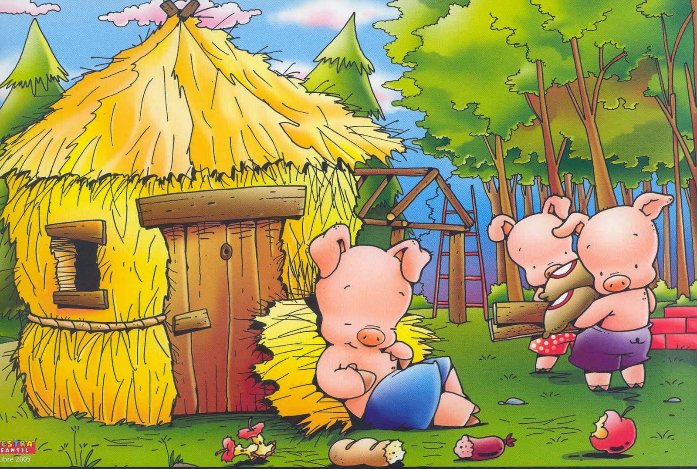
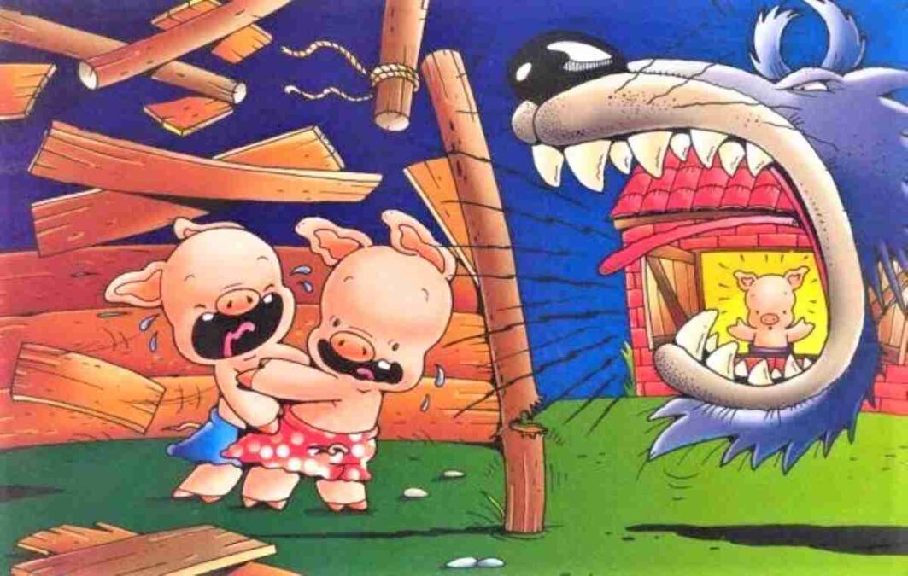
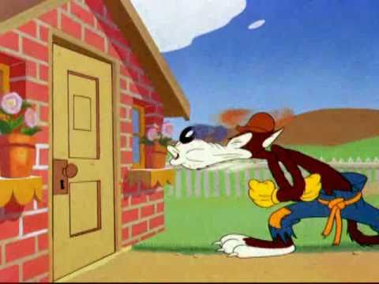

Primera Parte
La construccion de las casas
Había una vez tres cerditos que decidieron construir sus propias
casas. El primer cerdito, el más perezoso, construyó su casa de
paja. El segundo cerdito, un poco más trabajador, decidió hacer su
casa de madera. El tercer cerdito, el más trabajador y astuto,
construyó su casa de ladrillos.

Segunda Parte
La Llegada del Lobo
Un día, un lobo feroz llegó a la casa de paja del primer cerdito.
Soplando con fuerza, derribó la casa fácilmente. El primer cerdito
corrió a la casa de madera de su hermano. El lobo los siguió y, al
llegar, sopló con todas sus fuerzas, derribando también la casa de
madera.

Tercera Parte
La resistencia y la victoria
En la casa de ladrillos, los tres cerditos se unen y se preparan
para enfrentar al lobo. A pesar de sus intentos de derribar la
casa, el lobo no puede entrar. Finalmente, cansado y frustrado, se
va, y los cerditos celebran su triunfo, reconociendo la
importancia del trabajo duro y la previsión.
